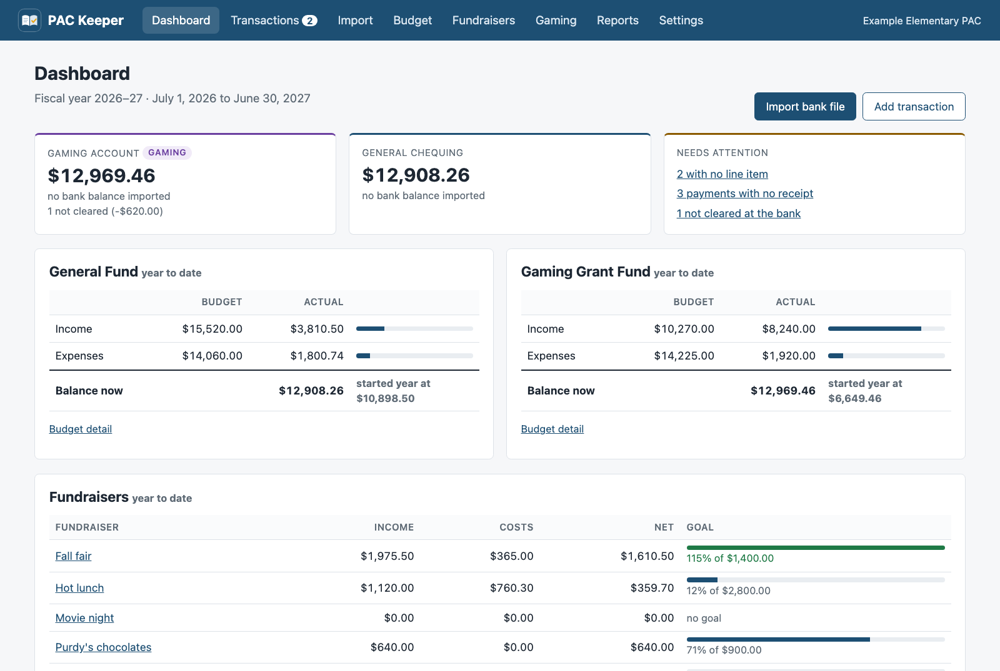
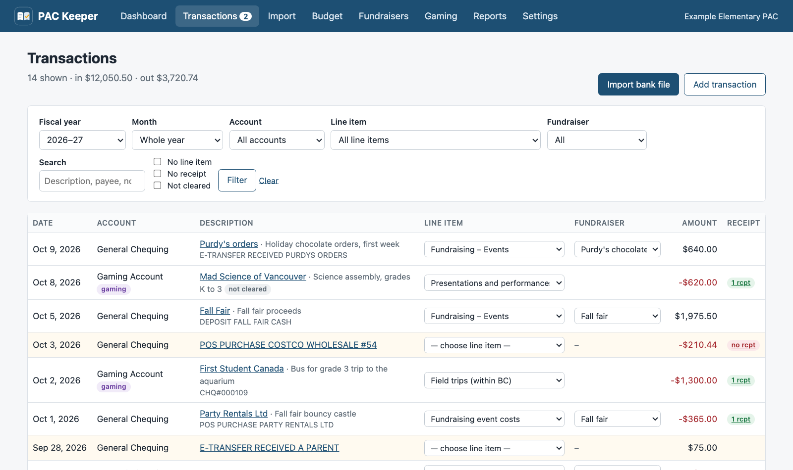
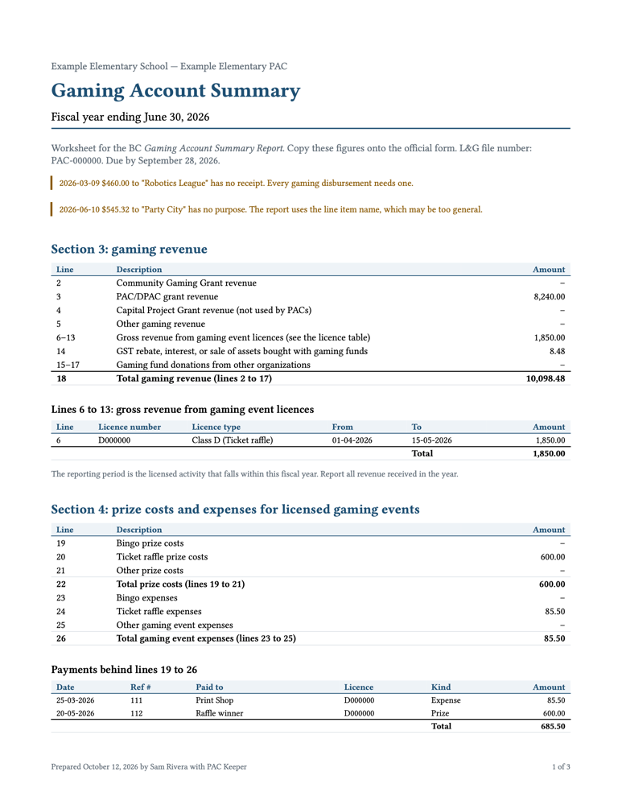
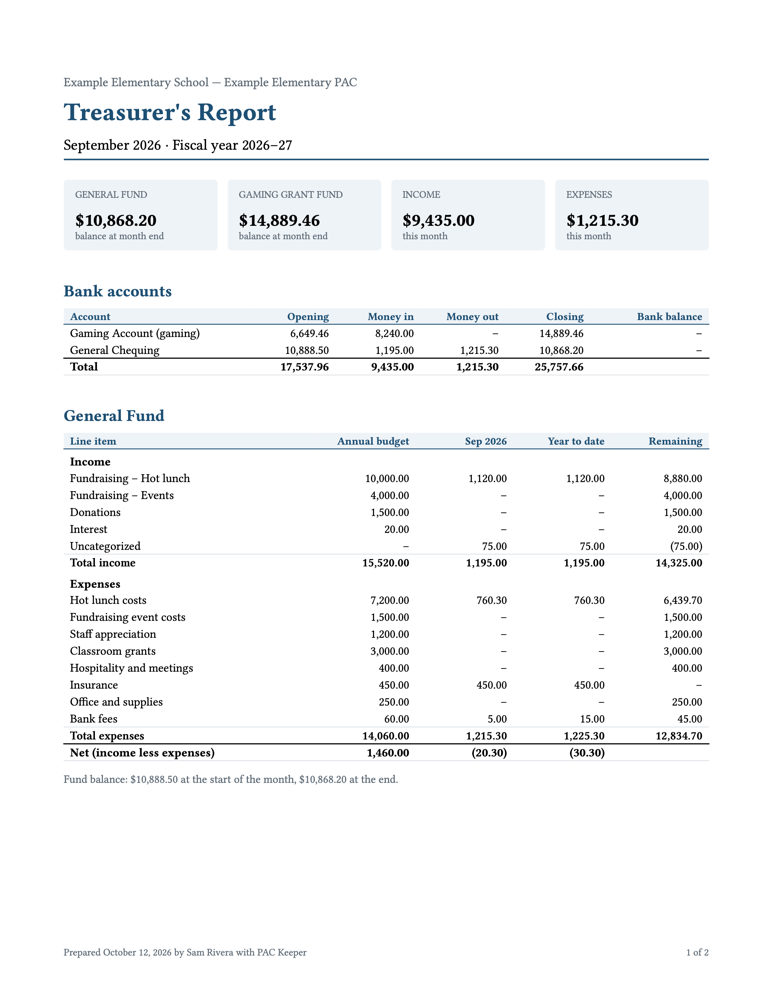
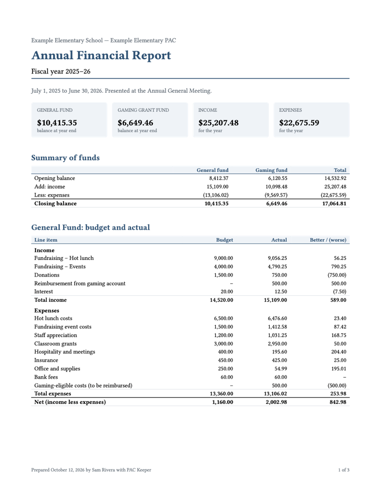
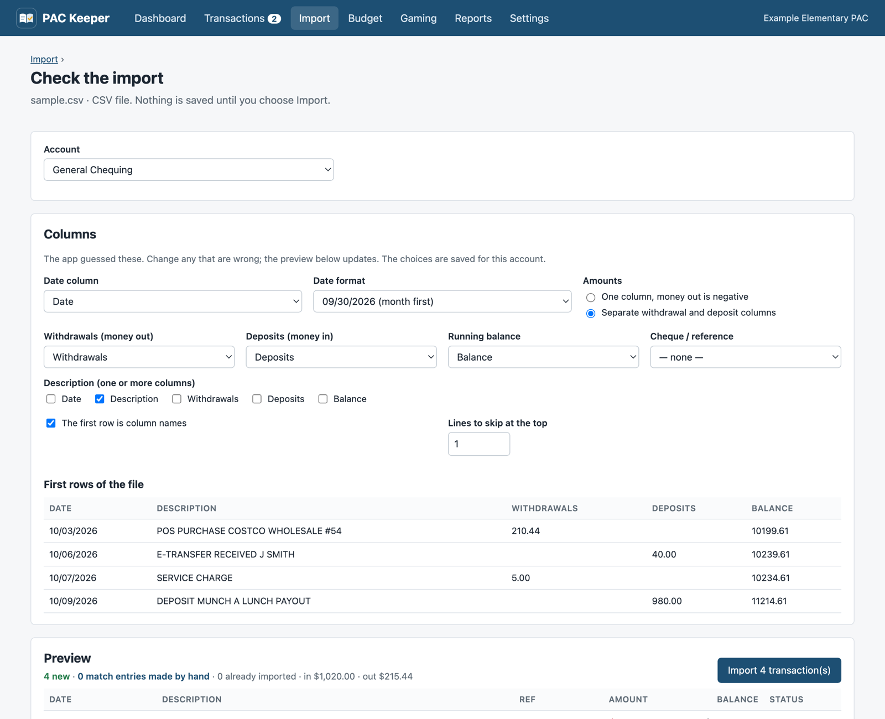
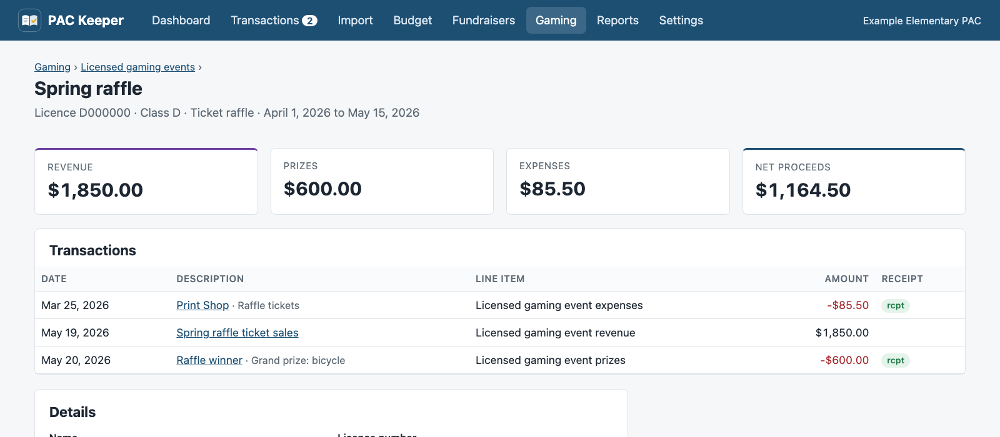
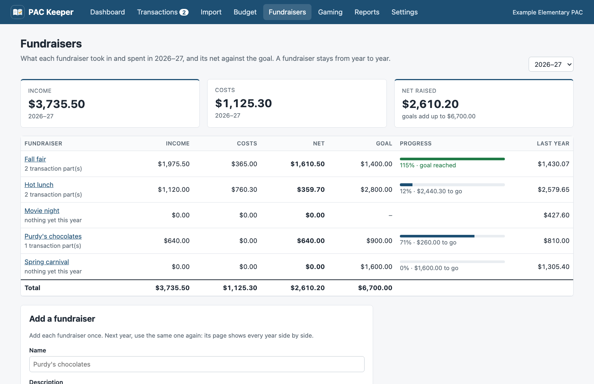

For BC Parent Advisory Committee treasurers
The PAC's books, kept.
Import the bank statements, attach the receipts, and assign each transaction to the budget. PAC Keeper tracks every fundraiser, and it produces the monthly treasurer's report, the annual report for the AGM, and the Gaming Account Summary Report worksheet.
Demo sign-in: demo / packeeper · made-up PAC, resets every hour

Before each PAC meeting
The same four jobs, every month.
PAC Keeper does the sums and keeps the paper trail, so you only make the decisions.
Import the bank file
Download the activity from online banking and upload it. OFX, QFX, QBO, and CSV work. Rows you already have are skipped, and a cheque you wrote by hand is matched when it clears.
Assign each transaction
Pick a budget line from the list, and the fundraiser if it has one. Split a Costco run across hot lunch and staff appreciation. Rules handle the repeats, such as bank fees.
Attach the receipts
Drop in a photo or a PDF. Anything still missing a receipt is flagged on the dashboard and in the report.
Print the report
Choose the month, and PAC Keeper makes the treasurer's report: balances checked against the bank, budget against actual, and every transaction.

BC Community Gaming Grant
The gaming report, line by line.
Gaming money lives in its own account with its own rules. PAC Keeper keeps it apart from the general fund and fills in the provincial Gaming Account Summary Report for you.
- Line 3
- PAC/DPAC grant received
- Lines 6–13
- Gross revenue from each licensed gaming eventLicence number, class, and reporting period for every raffle or bingo
- Line 14
- Interest and GST rebates
- Lines 19–26
- Prize costs and event expensesSplit into bingo, ticket raffle, and other, as the form asks
- Lines 30–45
- Every disbursement, with date, cheque number, payee, and purpose
- Line 47 = 52
- Closing balance, checked against the gaming account at the bank
And it checks the grant conditions
- Deposits that are not grant money, interest, or event revenue
- Payments with no receipt or no stated purpose
- Reimbursements to the general account that do not match their expenses exactly, or cross a fiscal year
- Grant money past its 24-month spending deadline, with the spend-by date of every grant
- The report's due date, 90 days after year end

Reports
Ready for the meeting, the AGM, and the Province.
Every report is a clean PDF with the PAC's name on it, so you can print it, email it, or file it.

Monthly treasurer's report
For each meeting: everything since the last meeting, or a calendar month. Account balances checked against the bank, budget against actual for the period and the year to date, fundraisers, every transaction, and the items still to resolve.

Annual report for the AGM
Opening and closing balance of each fund, budget against actual with variances, each fundraiser's net against its goal, monthly totals, the gaming summary, your notes, and signature lines.
Gaming Account Summary worksheet
The figure for each line of the provincial form, the licence table, every disbursement, reimbursement summaries, and bank balances at year end.
Planning next year? The budget proposal starts from last year's budget or actuals, estimates the gaming grant from enrolment, and prints with an approval block for the motion.
Bank files
No bank login to hand over.
PAC Keeper never connects to your bank. You download a statement file, and PAC Keeper reads it.
- Built with Prospera Credit Union exports, and works with any bank that offers OFX, QFX, QBO, or CSV.
- For a CSV, it guesses the columns, shows you a preview, and remembers your choices.
- Overlapping date ranges are fine. Rows already imported are skipped.
- Picked the wrong account? Undo the whole import in one step.

Licensed gaming events
Raffles and bingo, with the licence attached.
Record each licensed event with its licence number, class, and dates. Link its ticket sales, prizes, and costs, and see the net proceeds at a glance.
- Revenue goes on lines 6 to 13, one line per licence.
- Prizes and expenses go in Section 4, not in the disbursements.
- A finished event that cost more than it raised is flagged, because grant money may not pay fundraising costs.

Fundraisers
Hot lunch, chocolates, and the fall fair, year after year.
Add each fundraiser once. Tag its sales and its bills, and see what it raised this year against its goal and against last year.
- Split a deposit or a Costco run, and give each part its own fundraiser.
- Rules tag the hot lunch payout and the supplier's bill when you import.
- Give a line item its fundraiser, and every transaction on that line is tagged for you.
- Print a status report for one fundraiser. The monthly and AGM reports include a fundraisers table.

June, every year
Easy to hand over to the next treasurer.
One folder
The database, the receipts, and every bank file live in one folder. Download a backup as a single zip file. The gaming grant asks you to keep records for five years; this is how.
Hosted, or on your computer
With a hosted account, the treasurer edits and invites the chair and signing officers to view. A new treasurer is one invitation away. Or install the PAC Keeper app on the treasurer's Mac or Windows computer.
Any fiscal year
July to June, September to August, or the year in your bylaws. Budgets stay line by line from one year to the next, so years compare.
Download
PAC Keeper on the treasurer's computer.
The app for Mac and Windows keeps the records on your computer. There is no account to set up, and it works without an internet connection.
Mac
For Apple silicon and Intel Macs with macOS 11 or later.
Download for Mac- On the download page, click the
.dmgfile. - Open it and drag PAC Keeper to Applications.
- The first time, macOS says it cannot check PAC Keeper. Click Done. Open System Settings, then Privacy & Security, and click Open Anyway.
Windows
For 64-bit Windows 10 and 11.
Download for Windows- On the download page, click the
-setup.exefile. - Run it. It installs for you only, so it does not ask for an administrator.
- If "Windows protected your PC" shows, click More info, then Run anyway.
Your records
The app keeps the database, the receipts, and the bank files in one folder on your computer. Settings shows the folder and saves a backup to Downloads.
To move the records to another computer, close PAC Keeper on both computers and copy that folder to the same place. To share the books with the executive, use a hosted account instead.
The computer asks you to confirm the first time because the app is not signed with a paid developer certificate yet. Both downloads come from PAC Keeper's releases page on GitHub. After that, the app updates itself: it installs each new version when you close it. Settings turns this off.
Questions
What treasurers ask first.
Does it connect to our bank account?
No. You download a statement file from online banking and upload it. There is no bank password to share, and nothing to set up with the bank.
Which banks does it work with?
It was built with Prospera Credit Union exports. Any bank that exports OFX, QFX, QBO, or CSV works. For a CSV, you choose the columns once and PAC Keeper remembers them.
Does it decide what the gaming grant can pay for?
No. That is the executive's call. PAC Keeper keeps gaming money in its own fund, lists the eligible and ineligible uses as a reminder, and flags what the grant conditions check: deposits, receipts, purposes, reimbursements, and deadlines.
Can the rest of the executive see the books?
Yes. With a hosted account, a treasurer invites the others by email. Treasurers can edit. A viewer, such as the chair, can see everything and open every report, but cannot change anything.
Where is our data kept?
With a hosted account, your PAC's records sit in their own database on the PAC Keeper server, apart from every other PAC. With the Mac or Windows app, the records stay on the treasurer's computer. Either way, you can download all your records at any time.
Is there an app for Mac or Windows?
Yes. Install PAC Keeper on the treasurer's computer. It keeps the records on that computer, works without an internet connection, and has no account to set up. It is for one person. To share the books with the executive, use a hosted account. Download the app.
What can I do in the demo?
Everything except upload files: assign transactions, split them, tag fundraisers and set their goals, edit the budget, record a raffle, import a sample statement, and print every report. The demo PAC is made up. Other visitors see your changes, and the data resets every hour.
See a year of PAC books in two minutes.
The demo holds a made-up PAC with a year and a half of hot lunches, chocolate orders, field trips, a raffle, and a gaming grant. Open the gaming report first.
demo / packeeper
Ready for your own PAC? Request an account. We review each request, then you invite the rest of the executive.
Questions? Write to hello@packeeper.ca